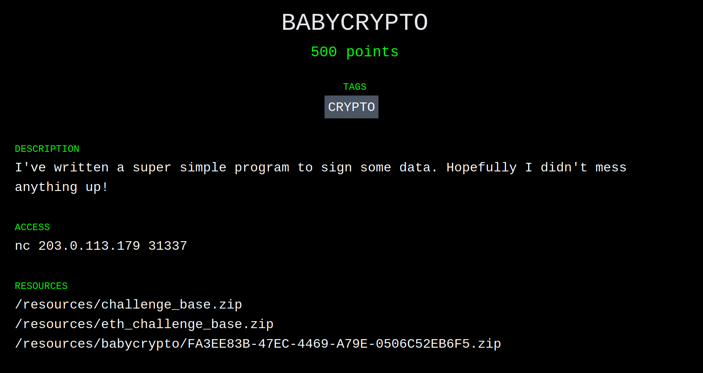

Introduction
Paradigm, a crypto-focused investment firm, hosted a capture-the-flag style competition over the past weekend with over $10,000 in prizes split among the top three teams. Our team, dilicious1 2, competed and took first place, solving 15 out of a possible 17 challenges.
If you aren't familiar with the term, a capture-the-flag competition (at least in the software industry) is a cyber-security challenge where participants exploit vulnerabilities to achieve goals (analogous to capturing the flag in meatspace.)
This particular competition was focused on the Ethereum blockchain and related technologies.
Our Team
Our team, in alphabetical order by the first letters of our Twitter usernames:
- @adietrichs 3
- @GNSPS
- @joranhonig
- @lethalspoons
- @lightclients 3
- @sbetamc
- @_SamWilsn_ 3
- @smarx
- @vwuestholz
- @wadeAlexC
- @wolflo0
Go follow them or something, I don't know.
Challenges
The competition was split into 17 challenges, covering topics from reverse engineering, to cryptography, to market manipulation. Considering I'm an expert in exactly zero of those fields, I'm quite surprised I have anything to write up!
BABYCRYPTO
The first challenge I opened was BABYCRYPTO. Considering the name, it seemed like the second easiest challenge (after HELLO, which @adietrichs had already taken) and I figured if I was going to be able to contribute anything, it would be here.
Clicking the challenge, I was greeted by a pleasantly green-and-black page:

Top points to Paradigm for the hacker-esque vibe.Based on my minutes of experience in other software puzzle games, I suspected that this might be a XOR cypher or a Caesar square, so I quickly downloaded all three of the challenge zips, and spent the next half-an-hour or so setting up Docker and building images. The Dockerfiles in the archives turned out to be the biggest red herring of the entire weekend, tricking several of us into a bunch of work that was ultimately pointless. 4
The contents of the three BABYCRYPTO archives:
.
├── babycrypto
│ └── public
│ ├── deploy
│ │ ├── chal.py
│ │ └── requirements.txt
│ └── Dockerfile
├── challenge_base
│ ├── 00-create-xinetd-service
│ ├── 99-start-xinetd
│ ├── Dockerfile
│ ├── entrypoint.sh
│ └── handler.sh
└── eth_challenge_base
├── 98-start-gunicorn
├── Dockerfile
└── eth_sandbox
├── auth.py
├── hashcash.py
├── __init__.py
├── launcher.py
└── server.py
The ~~only important~~ file I chose to focus on was chal.py, which ended up being a good place to start for most of the future challenges too.
Here is chal.py in its entirety:
from random import SystemRandom from ecdsa import ecdsa import sha3 import binascii from typing import Tuple import uuid import os def gen_keypair() -> Tuple[ecdsa.Private_key, ecdsa.Public_key]: """ generate a new ecdsa keypair """ g = ecdsa.generator_secp256k1 d = SystemRandom().randrange(1, g.order()) pub = ecdsa.Public_key(g, g * d) priv = ecdsa.Private_key(pub, d) return priv, pub def gen_session_secret() -> int: """ generate a random 32 byte session secret """ with open("/dev/urandom", "rb") as rnd: seed1 = int(binascii.hexlify(rnd.read(32)), 16) seed2 = int(binascii.hexlify(rnd.read(32)), 16) return seed1 ^ seed2 def hash_message(msg: str) -> int: """ hash the message using keccak256, truncate if necessary """ k = sha3.keccak_256() k.update(msg.encode("utf8")) d = k.digest() n = int(binascii.hexlify(d), 16) olen = ecdsa.generator_secp256k1.order().bit_length() or 1 dlen = len(d) n >>= max(0, dlen - olen) return n if __name__ == "__main__": flag = os.getenv("FLAG", "PCTF{placeholder}") priv, pub = gen_keypair() session_secret = gen_session_secret() for _ in range(4): message = input("message? ") hashed = hash_message(message) sig = priv.sign(hashed, session_secret) print(f"r=0x{sig.r:032x}") print(f"s=0x{sig.s:032x}") test = hash_message(uuid.uuid4().hex) print(f"test=0x{test:032x}") r = int(input("r? "), 16) s = int(input("s? "), 16) if not pub.verifies(test, ecdsa.Signature(r, s)): print("better luck next time") exit(1) print(flag)
With the requirements.txt file, I was able to get the program to run locally:
message?
This is Python3, so that rules out any shenanigans with input vs. raw_input. I didn't notice any other particularly interesting points in the code itself, so that means it must actually be a cryptography challenge!
Oh god. Its ECDSA. I knew I should've paid more attention in my undergraduate cryptography class. I was about to ask @adietrichs if I could take a look at HELLO instead, when I noticed this interesting pattern:
message? wanna switch? r=0xe430b3a398f2320556eef81c1c523ea5ae0a920f493c8376eafcb0dc9cd75b89 s=0x4a19d0b156a9d10b0a86b729316909cdc8634ec23aa38f5f891e2599fc316a81 message? no r=0xe430b3a398f2320556eef81c1c523ea5ae0a920f493c8376eafcb0dc9cd75b89 s=0x43d8ec82d7b6b1f3c8ed41b0ba682d5291f6d4a922a57729fa716dccd0f237d6 message? </3 r=0xe430b3a398f2320556eef81c1c523ea5ae0a920f493c8376eafcb0dc9cd75b89 s=0xbbfb7b34c31f025bddb8724a53dae7dd5a17c489587b881b8ed0dc5453c07e87
The r values for the three different messages were the same! As established earlier, I'm no cryptography expert, and I have no idea what r actually means, but I do know that you should get different outputs when signing different inputs, so off to search the internet!
Aha! We have our vulnerability. Repeating something about something lets you extract the private key.
A little more searching around turned up a plethora of git repositories claiming to be able to extract a private key based on this vulnerability. A few moments later, and I had this script:
from ecdsa import ecdsa, SigningKey from ecdsa.numbertheory import inverse_mod from hashlib import sha1 g = ecdsa.generator_secp256k1 publicKeyOrderInteger = g.order() r = "e430b3a398f2320556eef81c1c523ea5ae0a920f493c8376eafcb0dc9cd75b89" sA = "4a19d0b156a9d10b0a86b729316909cdc8634ec23aa38f5f891e2599fc316a81" sB = "43d8ec82d7b6b1f3c8ed41b0ba682d5291f6d4a922a57729fa716dccd0f237d6" hashA = "24281772548044994405505787307091019721595367071300198475142035580469771474091" hashB = "56710668495515998944273818574660611208941006033402527734960197520384934694586" r1 = int(r, 16) s1 = int(sA, 16) s2 = int(sB, 16) #Convert Hex into Int L1 = int(hashA, 10) L2 = int(hashB, 10) numerator = (((s2 * L1) % publicKeyOrderInteger) - ((s1 * L2) % publicKeyOrderInteger)) denominator = inverse_mod(r1 * ((s1 - s2) % publicKeyOrderInteger), publicKeyOrderInteger) privateKey = numerator * denominator % publicKeyOrderInteger print(privateKey)
The constants:
gis the particular curve thatchal.pyused.ris the shared value from the two signatures.sAandsBare thesvalues from the two signatures.hashAandhashBare the outputs ofhash_messagein the original script, for the given inputs.
The output:
82639917221039576394263609841358608750060353480659277072454055536914923163809
Hack that back into the original program (by modifying gen_keypair) and you can sign arbitrary messages! 5
Conclusion
Well, that's it! That's all of BABYCRYPTO. Stay tuned for two more posts on the BROKER and BABYREV challenges.
Footnotes
Although I wasn't part of the subcommittee on team naming, I'm pretty sure dilicious is just diligence plus delicious.
It took me longer than I care to admit to realize that diligence is actually ConsenSys Diligence, and my confusion explains why this was our Discord server's icon, instead of something relevant.
{kind=link}
Actually part of ConsenSys Quilt, not Diligence.
I've been informed that the Docker containers would've let us test solutions locally, but I still assert they were a red herring.
Apologies if you were looking for any in-depth analysis of how the ECDSA private key recovery actually works. You can find the repository I used as a starting point here. It has comments!